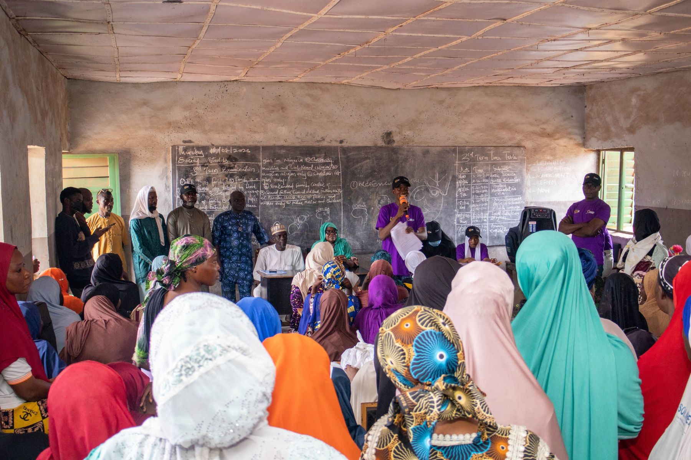

Education & Learning
Access to quality learning opportunities, mentorship, digital skills and academic support for young people who would otherwise fall through the gaps.
Eunice Ameh Youth Development Initiative
We equip young people and women with the knowledge, skills, opportunities and confidence to lead, innovate and contribute meaningfully to sustainable development — in their own communities, on their own terms.

Who we are
EAYDI is a youth-centred development organisation working at the intersection of education, leadership, health, economic opportunity and community voice.
Too often, young people and women are treated as the subject of development programmes rather than their architects. We work the other way round: we build the skills, the networks and the institutional systems that let communities design and sustain their own solutions — then we get out of the way.

A school-based education programme in session — students, parents and teachers in the same room, hearing the same thing.
What we do
Each pillar stands on its own — but it is the combination that moves a young person from potential to participation.
Access to quality learning opportunities, mentorship, digital skills and academic support for young people who would otherwise fall through the gaps.
Training, coaching and real platforms where young people practise leadership — not simulate it — and step into civic and community decision-making.
Menstrual health and hygiene, sexual and reproductive health education, and the dignity kits that keep girls in school instead of at home.
Vocational and entrepreneurial skills, financial literacy and start-up support so young people and women can build livelihoods that last.
Outreach, advocacy and dialogue that bring parents, schools, faith leaders and local government into the work — because change that isn’t local doesn’t hold.
Objectives, activities, who each one serves and how to take part.

Flagship campaign
No girl should miss a week of school every month because she cannot afford a sanitary pad.
Working alongside Youth Arise Africa, we take menstrual health and hygiene education directly into schools and communities — pairing frank, judgement-free teaching with reusable sanitary kits, food and hygiene items, and follow-up sessions that keep the conversation going long after the banner comes down.
Theory of change
Not a slogan — a chain of conditions we hold ourselves to, and measure against.
Young people and women have access to quality learning, leadership development, health education, economic empowerment and supportive networks — and the institutional systems needed to sustain that work are strengthened…
…they develop the skills, confidence, resilience and opportunities to improve their own lives and contribute meaningfully to community and national development.
Increased civic participation, improved livelihoods, healthier communities, greater gender equality, and stronger pathways toward sustainable development.
When you hand a girl knowledge about her own body and the means to manage it with dignity, you are not giving charity. You are removing a barrier that should never have been there.
From the field
In partnership with
Volunteer your time, partner your organisation, or fund a programme. Every route in leads to the same place: a young person with a real shot.